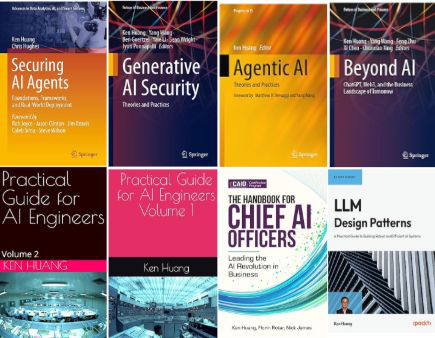

The 7-Layer Threat Modeling Framework for Agentic AI
Presented by Ken Huang — Fellow & Co-Chair of CSA AI Safety Working Groups · CEO, DistributedApps.ai

Legacy frameworks were designed for deterministic software with fixed trust boundaries. Agentic systems break every one of those assumptions.
| Framework | Focus | Methodology | Use cases |
|---|---|---|---|
| STRIDE | Six threat categories | Predefined threat categorization | Small teams, app/network security |
| DREAD | Quantitative risk scoring | Numerical risk prioritization | Risk prioritization, mature orgs |
| PASTA | Threats vs. business goals | Risk-centric, SDLC integration | Large enterprises, compliance |
| OCTAVE | Stakeholder operational risk | Asset-based, collaborative | Structured risk assessment |
| LINDDUN | Privacy threats | Privacy-focused risk analysis | Healthcare, finance, privacy apps |
Multi-Agent Environment, Security, Threat, Risk & Outcome. Each layer is its own attack surface — and threats cascade across layers.
Map every component of your system onto the seven layers. Example: mapping to Anthropic's Model Context Protocol (MCP).
Within each layer, reason about the five properties that make agents fundamentally different from traditional software.
A threat modeling platform that runs the full MAESTRO analysis for you — describe or upload your architecture, and it maps threats across all seven layers, cross-referenced to OWASP AIVSS, MITRE ATLAS & OWASP Agentic Top 10.
https://maestro-sentinel.com/ ↗
1 · Describe your architecture
2 · Threat intelligence library
3 · Per-threat analysis & mitigation
Ken Huang, CISSP — AI Book Author · Speaker · DistributedApps.AI · OWASP Top 10 for LLM Apps.
Scan the code or reach out to continue the conversation on threat modeling for agentic AI.